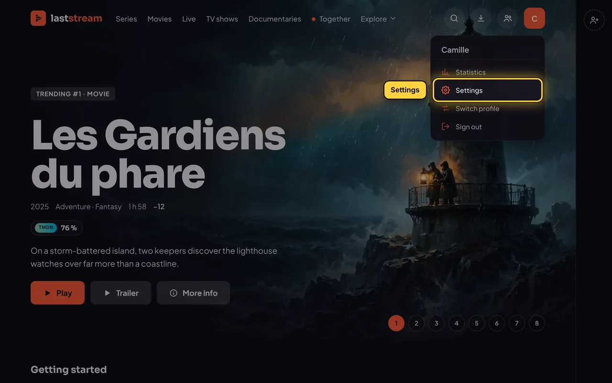
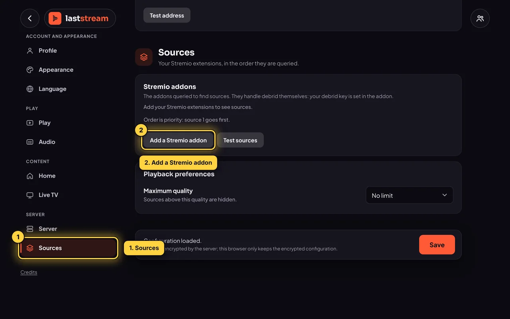
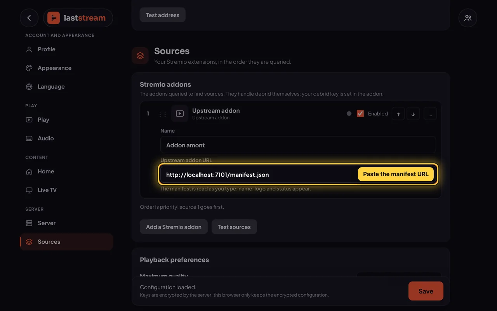
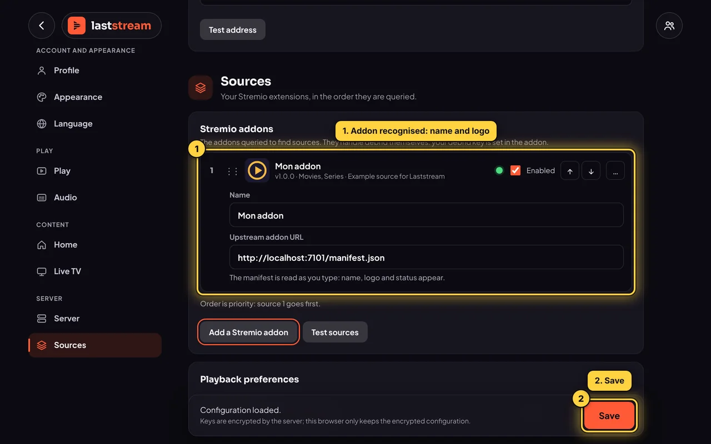
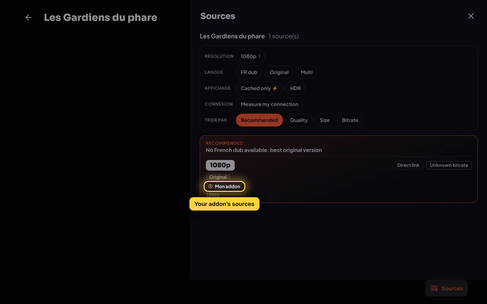

Before you start
- A signed-in account, on the main profile.
- The address of the extension’s manifest (it usually ends with
/manifest.json).
Steps
On each screenshot, the yellow frame shows where to tap or click; the numbers give the order. The app is in French: the screenshots show its English translation.
-
Tap your avatar, then “Settings”.

-
In the left column, choose “Sources” (1), then “Add a Stremio addon” (2).

-
Paste the address into “Upstream addon URL”.
stremio://links are accepted, and/manifest.jsonis added if missing.On the screenshots the address starts with
http://localhost: it is the example extension below, run locally for the guide. You paste the address given by the extension you want to install.
-
The manifest is read right away: the addon’s name, logo and status appear (1). Tap “Save” at the bottom of Settings (2).

-
Open a movie and tap “Play”: the addon’s links appear in the “Sources” panel.

Example: a basic extension
An extension is a small web service that exposes two addresses: /manifest.json and /stream/{type}/{id}.json.
The manifest:
{
"id": "exemple.mon-addon",
"version": "1.0.0",
"name": "Mon addon",
"description": "Exemple de source pour Laststream",
"resources": ["stream"],
"types": ["movie", "series"],
"idPrefixes": ["tt"],
"catalogs": []
}Response of /stream/movie/tt0000001.json:
{
"streams": [
{
"name": "Mon addon",
"title": "1080p",
"url": "https://exemple.com/video.mp4"
}
]
}This is exactly the extension used for this guide’s screenshots.